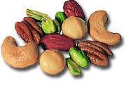

Nutty was originally a fast x86 box running Windows NT and donated by DecisionSoft . However, the fast hardware was moved to a different machine.
Nutty is now our FreeBSD machine. It's a Pentium 75 with 32 MB of RAM (some donated by a member as a result of hardware failures in February 2000). It is currently out of commission.